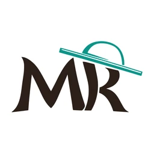

01
Ouvrir un fichier Word reçu
Ton abonnement a expiré et on t'envoie un .docx : tu l'ouvres, tu corriges, tu le renvoies au même format.
rapport.docx→Appli MR Office→rapport.docx corrigé

Six éditeurs open source qui reprennent le ruban d'Office (texte, tableur, présentations, PDF, stylo, code), et une appli de bureau gratuite qui ouvre tes fichiers Word, Excel et PowerPoint. Le mode d'emploi en français, sans rien cacher de ce qui n'est pas open source.

MR Office existe en deux parties : le dépôt GitHub contient six éditeurs open source (texte, tableur, présentations, PDF, écriture manuscrite, code) qui tournent dans le navigateur ; l'appli de bureau gratuite y ajoute un module fermé qui ouvre et enregistre les fichiers Word, Excel et PowerPoint. Où l'utiliser :
Téléchargement gratuit sur mroffice.ai : Windows 10 ou plus récent (64 bits), macOS 13+ (Intel) ou 14+ (Apple Silicon). C'est la seule version qui ouvre et enregistre les .docx, .xlsx et .pptx. Pas de version Linux annoncée.
Le plus simplegit clone du dépôt, puis npm install, npm run fonts, npm run build et npm run preview : les éditeurs s'ouvrent sur http://localhost:5178. Ils utilisent leurs propres formats (.mrdoc, .mrsheet, .mrslides, .mrink) plus CSV, Markdown, HTML et PDF, mais pas les fichiers Office.
Pour bidouillerDémo en ligne et éditeur intégrable pour les développeurs : les fichiers passent par les serveurs de MR Office. La page ne précise pas où ils sont stockés ni pour combien de temps.
Évite pour tes documents persoTon abonnement a expiré et on t'envoie un .docx : tu l'ouvres, tu corriges, tu le renvoies au même format.
Un tableur avec formats de nombres, mise en forme conditionnelle, tri et filtres ; les fonctions et graphiques demandent l'appli de bureau.
Lire, chercher, surligner, souligner, ajouter des notes, présenter ou imprimer un PDF.
Sur tablette ou écran tactile : stylos sensibles à la pression, surligneurs, lasso et reconnaissance des formes.
Un petit éditeur avec coloration : JavaScript, Python, SQL, Lua et shell s'exécutent dans le navigateur.
Une interface très proche d'Office et un démarrage fulgurant sur GitHub, mais un projet de deux semaines, porté par une seule entreprise, dont la partie qui lit les fichiers Office est fermée.
Code modifié le 24 novembre 2026, plusieurs mises à jour par semaine depuis sa création.
Environ 3 700 étoiles et 400 copies (forks) en deux semaines, mais un seul compte publie le code.
Appli de bureau utilisable hors ligne ; la version en ligne et la connexion passent par les serveurs de MR Office, sans détail publié sur le stockage.
Éditeurs sous AGPL-3.0, mais module Office, IA et connexion fermés ; licence commerciale vendue par l'éditeur (MR Note), modèle à long terme pas annoncé.
Dépôt créé le 10 novembre 2026 ; pas encore de recul sur la fidélité des fichiers Word et Excel complexes.
Comment on note : 5 critères notés sur 5, vérifiés sur GitHub, l'API GitHub, le README officiel et mroffice.ai le 24 novembre 2026. La note sur 10 est la moyenne ramenée sur 10.
Bon pour : Retrouver le ruban d'Office sans abonnement
Bon pour : Compatibilité Office totale, Copilot, Outlook
Bon pour : Une suite complète et mûre, entièrement open source
Bon pour : Interface en ruban et bonne compatibilité .docx, .xlsx, .pptx
Bon pour : Travailler à plusieurs en ligne
Projet créé en novembre 2026 : garde une copie de tes fichiers importants avant de les modifier avec MR Office.
Code source, installation et documentation officielle : tout est là.

Chaque vidéo RepoPop t'explique un dépôt GitHub utile en moins d'une minute, avec son kit comme celui-ci.